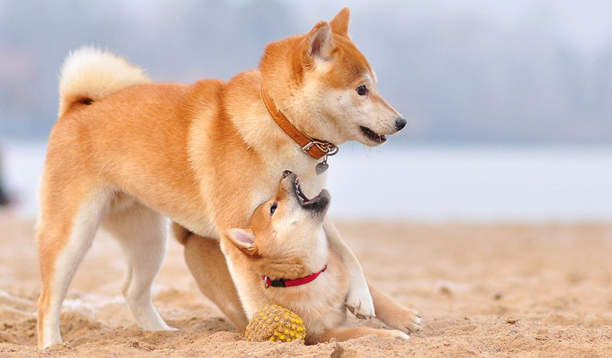

Краткая информация
Сиба-ину – охотничья собака, выведенная в Японии. Ее история насчитывает около двух с половиной тысяч лет. Современные представители породы часто выступают в роли компаньонов. Любознательный и дружелюбный нрав позволяет им хорошо ладить с хозяином, но животные своенравны, требуют грамотной дрессуры. С 1936 года сиба-ину признана достоянием Японии. Цельный характер, высокий интеллектуальный уровень и особая сила духа сделали этих животных популярными среди собаководов. Быть хозяином такого питомца непросто, но если вы завоюете его уважение и доверие, то получите массу удовольствия от общения с умным и любознательным другом. Порода подойдет опытным кинологам, а вот в качестве первой собаки сиба-ину со своим сложным нравом не самый удачный вариант.
Характеристика
Сиба-ину – подвижная и энергичная порода собак. Эти собаки любознательны и умны. Хорошо переносят высокие физические нагрузки, выносливы и активны. Благодаря этим качествам таких собак можно использовать в спорте. Сиба-ину c опаской относятся к незнакомцам, хорошие сторожа. Характер отличается независимостью и самостоятельностью. Они преданны владельцу, с удовольствием играют с детьми, но могут проявлять упрямство и убегать. С трудом подчиняются, предпочитая хитростью добиться своего. Иногда поведение этих собак невозможно объяснить.
Внешность
Сиба-ину имеет крепкий костяк, гармонично сложена, в общей конституции просматриваются выносливость и массивность предков, которым приходилось много часов проводить на охоте. Представители породы имеют крепкие лапы среднего размера, треугольную голову, схожую по форме и расположению глаз с лисьей.
Размеры
Кобели в холке варьируются в пределах 38-41 см, вес составляет от 9 до 14 кг. Суки миниатюрнее, высота особей – 35-38 см, вес от 8 до 13 кг. Собака сиба-ину хорошо сбалансированная, поджарая, хвост завернут кольцом на спину.
Корпус
Собака массивная, предрасположенная к длительным нагрузкам, имеет хорошее здоровье и выносливость. Прямая и сильная спина заканчивается мускулистой поясницей. Для породы характерны умерено широкая грудь, средний изгиб ребер, поджарый живот. Все части тела сиба-ину гармоничны по размеру, особи обладают крепкой и живой конституцией.
Окрас
Различают три основных вида окраса сиба-ину: рыжий, зонарный или сезам, черный с подпалинами серебристого или рыжего цвета. Обязательной составляющей для участия в выставках является уражиро – особый рисунок, который создает более светлая шерсть в области скул, шеи, нижней части груди, живота. Более светлые зоны также должны располагаться на внутренней поверхности лап и нижней части хвоста.
Характер Сиба-Ину
Сиба-ину отличается сильным и своевольным характером, собака требует твердой руки и уверенного хозяина. Склонная к доминированию, она все время будет проверять, вакантно ли место вожака, и пытаться его занять. Животное отличается средней степенью активности, вполне приспособлено для жизни в квартире в условиях мегаполиса. Однако наиболее комфортно пес будет себя чувствовать с активным хозяином, любящим регулярные физические нагрузки. Собака предпочитает длительные прогулки и станет отличным компаньоном в походах на природу.
Порода сиба-ину относится к примитивным, поэтому у представителей очень сильны инстинкты, выработанные веками эволюции. Даже хорошо воспитанные дрессированные особи в охотничьем пылу напрочь забывают о хозяине, не слышат команд, именно поэтому опытные кинологи рекомендуют выгуливать сиба-ину только на поводке во избежание неприятных ситуаций.
Питомцы очень чувствительны к личному пространству, ведут себя как заядлые собственники. При покушении на их вещи и еду способны проявить агрессию, активно отстаивают свою позицию. Сибу не рекомендуется заводить семьям с маленькими детьми, ведь нарушение границ животного может привести к негативным последствиям. Кинологи рекомендуют приводить собаку этой породы в дом, где дети старше 10 лет.
Обладая ярким и независимым характером, представители породы, как правило, выбирают себе одного хозяина и слушаются его. Собаки умны и хитры, при необходимости будут всеми способами отстаивать собственные интересы, поэтому владелец должен хорошо понимать животное и уметь грамотно с ним обращаться. Абсолютно исключено физическое насилие, агрессивный подход негативно сказывается на психике сиба-ину, делает собаку неуравновешенной и злобной.

Сколько стоит Сиба-Ину
Какая разница, сколько она стоит))) Ты ведь все равно мне ее подаришь :*